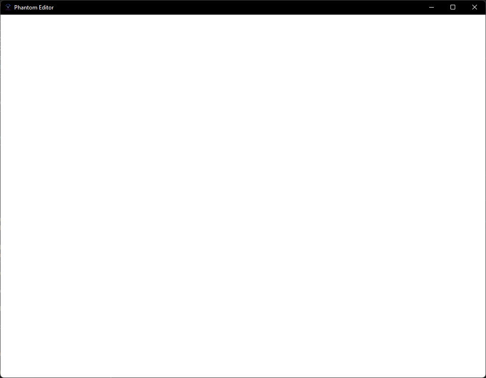

Introduction
Welcome! This book will guide you through the creation and design of a 3D game engine using the Rust programming language and the OpenGL graphics API. A variety of popular open source libraries will be used to achieve this goal in a reasonable amount of time.
Purpose
As of June 2022, the resources for learning game engine creation are scarce. The existing resources largely focus on C++ and cover various rendering techniques rather than topics that would be useful for designing gameplay mechanics. This is excellent! However, the focus for many of these resources is not on building a structured program that goes beyond the scope of tutorial code. This book is meant to be higher level, demonstrating how to build a 3D world and render it in realtime. This will be particularly of use to indie game developers looking to create a 3D game from scratch without getting overwhelmed.
Why Rust?
Rust is a great alternative to C++! A few of the benefits:
- It provides a smooth workflow for developers with clear, specific error messages from the compiler
- rustup and cargo make managing rust toolchain installations and rust projects straightforward
- The lints from clippy help to improve the code quality and catch certain common mistakes
- rustfmt handles formatting the code and code style
- Memory safety. Code written outside of
unsafeblocks is checked by the borrow checker
Target Audience
The target audience of this book is moderately experienced developers with an interest in graphics programming and game development. Prior graphics programming experience, particularly with OpenGL will be particularly useful. This is the book I would have wanted to read when first starting out with designing games from scratch.
What Is Covered
This book is very code-heavy and implementation focused, as opposed to other resources that may be more focused on theory.
What Is Not Covered
This book will not go into detail on linear algebra concepts or mathematics, as there are already great resources available for deep information those topics. A list of useful external resources for building upon the content of this book can be found in the Further Reading section of the appendix.
Project Repo
All of the source code for the Phantom engine built in this book can be found on github:
https://github.com/matthewjberger/phantom
Final Project Preview
Chapter 1
- Set up the project structure
- Get a window up and running
- Create the boilerplate code used throughout the rest of the book
The code in this chapter will serve as the project's foundation.

Chapter 2
TBD
Getting Started
Dependencies
This project requires the Rust programming language.
Development Environment Setup
Using vscode and rust-analyzer with the rust-analyzer vscode extension is recommended. However, any Rust development environment you are comfortable with will work.
The official Rust book is a great resource if you are new to Rust.
Quick Windows Setup
On windows, installing programs can be trickier than on other platforms. It is recommended to use a package manager such as Scoop or chocolatey.
First, make sure PowerShell 5 (or later, include PowerShell Core) and .NET Framework 4.5 (or later) are installed. Then run:
# Install scoop
Set-ExecutionPolicy RemoteSigned -scope CurrentUser
Invoke-Expression (New-Object System.Net.WebClient).DownloadString('https://get.scoop.sh')
# Scoop uses git to update itself and 7zip to extract archives
scoop install git 7zip
# Install the project's dependencies
scoop install rustup
# Set the stable rust toolchain as the default toolchain
rustup default stable
# Install vscode, kept in a separate bucket called 'extras'
scoop bucket add extras
scoop install vscode
Project Setup
If you wish to make an apple pie from scratch,
you must first invent the universe.
~ Carl Sagan
Welcome to the exciting world of game development!
To get started, we'll first need to setup our project structure.
Creating the Project Structure
Let's create a new project! We will call our engine the phantom game engine.
cargo new --lib phantom
cd phantom
Now we can create all of the libraries and applications we will need for this project.
# Applications
cargo new --vcs none apps/editor
cargo new --vcs none apps/viewer
# Libraries
cargo new --lib crates/phantom_app
cargo new --lib crates/phantom_dependencies
cargo new --lib crates/phantom_gui
cargo new --lib crates/phantom_render
cargo new --lib crates/phantom_world
A Window Icon
For our window, we'll want a nice looking icon. Let's copy the following png into a folder for later use.
mkdir assets/icons
pushd assets/icons
curl -O https://matthewjberger.xyz/phantom/images/phantom.png
popd
Code Linting
To perform code linting we'll use clippy.
First, let's install clippy:
rustup update
rustup component add clippy
And then add a configuration file at the root named clippy.toml with the following contents:
too-many-lines-threshold = 80
too-many-arguments-threshold = 5
These can be any settings you like, of course. Here is a list of valid clippy options.
Lints will be performed automatically by vscode. To lint manually, you can run cargo clippy -p phantom.
Code Formatting
To perform code formatting we'll use rustfmt.
First, let's install rustfmt:
rustup update
rustup component add rustfmt
And then add a configuration file at the root named rustfmt.toml with the following contents:
max_width = 100
These can be any settings you like, of course. Here is a list of valid rustfmt settings.
Formatting can be performed automatically by vscode. To format the project manually, you can run cargo fmt --workspace.
Add a Readme
Our README.md looks like this:
# Phantom
Phantom is a 3D game engine written in Rust!
## Development Prerequisites
- [Rust](https://www.rust-lang.org/)
## Instructions
To run the visual editor for Phantom, run this command in the root directory:
`cargo run --release --bin editor`.
Putting It All Together
Now to connect our existing projects to one another, we'll have to update the contents of some of our new source files.
Connecting Our Libraries
Our game engine is designed as a library. We will want to make the various parts of the engine accessible by re-exporting them.
Our Cargo.toml at the root should look like this:
[package]
name = "phantom"
version = "0.1.0"
edition = "2021"
[workspace]
default-members = ["apps/*"]
members = ["apps/*", "crates/*"]
[dependencies]
phantom_app = { path = "crates/phantom_app" }
phantom_dependencies = { path = "crates/phantom_dependencies" }
phantom_gui = { path = "crates/phantom_gui" }
phantom_render = { path = "crates/phantom_render" }
phantom_world = { path = "crates/phantom_world" }
Next, the src/lib.rs should look like this:
pub mod app {
pub use phantom_app::*;
}
pub mod dependencies {
pub use phantom_dependencies::*;
}
pub mod gui {
pub use phantom_gui::*;
}
pub mod render {
pub use phantom_render::*;
}
pub mod world {
pub use phantom_world::*;
}
This lets us access the public exports of all of our engine libraries, and applications will only need a single import of our main engine library.
Handling Dependencies
To handle dependencies consistently across all of our projects,
we have created a phantom_dependencies project. Here will we
list all of our dependencies and re-export them. This helps
ensure the same version of any given dependency is used across all of our modules.
For the following apps:
phantom_appphantom_guiphantom_renderphantom_world
Add our phantom_dependencies crate as a dependency in the corresponding Cargo.toml:
phantom_dependencies = { path = "../phantom_dependencies" }
Connecting our Apps
For the following apps:
editorviewer
Add our main phantom crate as a dependency in the corresponding Cargo.toml:
phantom = { path = "../.." }
Verifying your Project
Check your project so far with the following commands:
cargo check
Adding dependencies
To make adding dependencies easier, we'll install a cargo extension called cargo-edit.
cargo install cargo-edit
Then we can use it to add some dependencies to our phantom_dependencies crate.
cargo add anyhow -p phantom_dependencies
cargo add env_logger -p phantom_dependencies
cargo add log -p phantom_dependencies
cargo add thiserror -p phantom_dependencies
Now we re-export these dependencies in phantom_dependencies/lib.rs:
pub use anyhow;
pub use env_logger;
pub use log;
pub use thiserror;
We will continue following this pattern whenever we add dependencies to the project!
The dependencies we have added are:
- anyhow
- Flexible concrete Error type built on
std::error::Error. We will use this in our applications, which do not need to return detailed, complex error types.
- Flexible concrete Error type built on
- thiserror
- A
derive(Error)for struct and enum error types. We will use this in our engine and its libraries, so that we can return detailed, descriptive error types. This will ultimately make debugging easier.
- A
- log
- The standard Rust logger facade.
- env_logger
- An implementation of the standard rust logger facade that is configured using environment variables.
Creating an Application
TBD
Appendix
A - Further Reading
-
This is a website about graphics programming that focuses on the modern OpenGL API specifically.